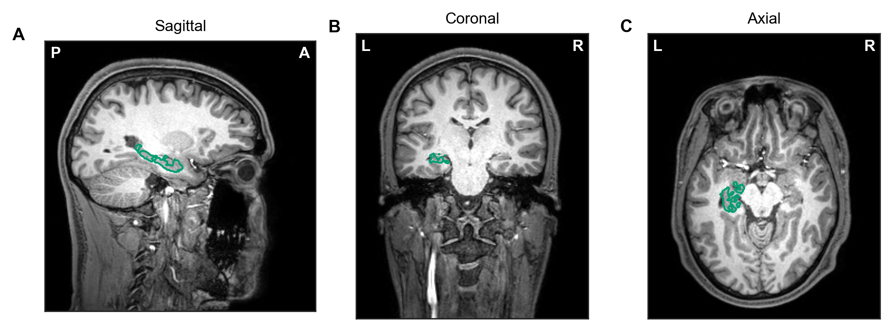
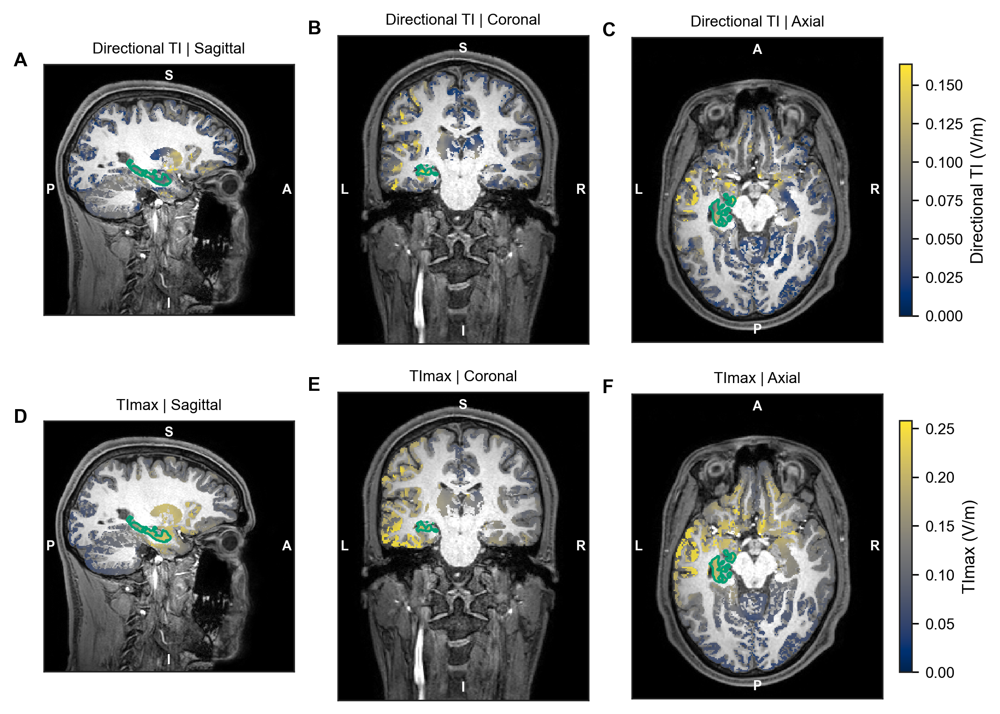
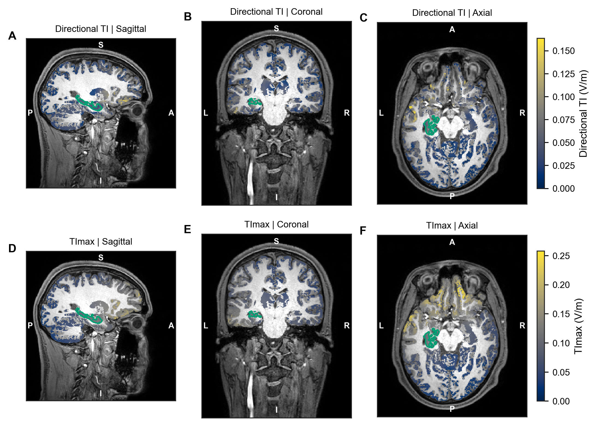
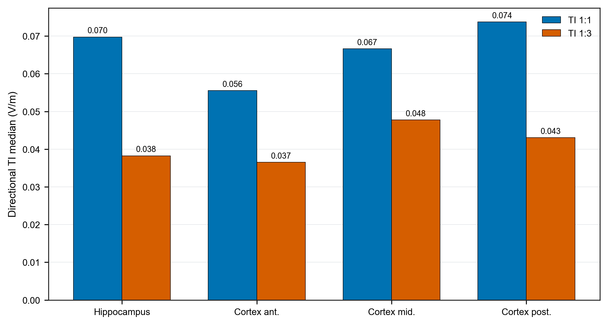

一、主要结论
- 左海马中位场强：TI 1:1 为 0.070 V/m，TI 1:3 为 0.038 V/m。
- TI 1:3 使前海马场强份额增加 2.5 个百分点，但场强占比最高的区域仍是海马后段。
- 两种方案均存在皮层和其他非靶区暴露；部分局部皮层采样区与左海马相当或更高。
二、模型与刺激方案
本示例使用 SimNIBS 官方 ernie MRI 数据；正式服务应替换为客户 MRI 和经审核的个体头模型。
TI 1:1
FT7(+1.0 mA) / Fp2(-1.0 mA)，2.005 kHz；TP7(+1.0 mA) / TP8(-1.0 mA)，2.000 kHz
TI 1:3
FT7(+0.5 mA) / Fp2(-0.5 mA)，2.005 kHz；TP7(+1.5 mA) / TP8(-1.5 mA)，2.000 kHz

{kind=link}

{kind=link}
三、模拟结果

{kind=link}

{kind=link}

{kind=link}

{kind=link}

{kind=link}

{kind=link}

{kind=link}

{kind=link}
| 方案 | 区域 | 平均值 (V/m) | 中位数 (V/m) | P95 (V/m) | 体积 (mm³) |
|---|---|---|---|---|---|
| TI 1:1 | 左海马 | 0.0796 | 0.0697 | 0.1830 | 4077.2 |
| TI 1:1 | 右海马 | 0.0512 | 0.0406 | 0.1332 | 4275.5 |
| TI 1:1 | 前部皮层采样区 | 0.0895 | 0.0556 | 0.2755 | 1199.9 |
| TI 1:1 | 中部皮层采样区 | 0.0784 | 0.0666 | 0.1931 | 1284.3 |
| TI 1:1 | 后部皮层采样区 | 0.0735 | 0.0737 | 0.1375 | 1385.2 |
| TI 1:1 | 全部非靶区灰质 | 0.0501 | 0.0445 | 0.1232 | 715577.8 |
| TI 1:3 | 左海马 | 0.0424 | 0.0383 | 0.0920 | 4077.2 |
| TI 1:3 | 右海马 | 0.0332 | 0.0300 | 0.0702 | 4275.5 |
| TI 1:3 | 前部皮层采样区 | 0.0626 | 0.0365 | 0.1929 | 1199.9 |
| TI 1:3 | 中部皮层采样区 | 0.0534 | 0.0478 | 0.1229 | 1284.3 |
| TI 1:3 | 后部皮层采样区 | 0.0404 | 0.0430 | 0.0716 | 1385.2 |
| TI 1:3 | 全部非靶区灰质 | 0.0332 | 0.0263 | 0.0918 | 715577.8 |
四、结果解读
- 如果研究目标是提高这个模型中的左海马整体场强，TI 1:1 更符合该目标。
- TI 1:3 使海马内高值区略向前移动，但同时降低左海马整体场强，且没有减少非靶区暴露。
- 本例不能用于判断临床疗效、安全性或患者个体化方案。
结果仅适用于 ernie 单受试者、当前电极位置、组织电导率和数值设置。
五、方法、质量控制与交付
有限元计算
采用 SimNIBS 4.6.0 和 hypre 求解器。两组载波共用同一网格，灰质分析包含 1,337,567 个四面体。
海马定义
灰质单元中心变换到 MNI 空间后，以最近邻方式采样 Harvard-Oxford 25% 最大概率图谱中的左、右海马。
TI 指标
主要指标为沿 DTI 主方向计算的方向投影 TI；同时提供方向无关的 TImax。两者均为调制包络幅度，不是神经激活阈值。
质量控制
| 检查 | 状态 | 依据 |
|---|---|---|
| 载波网格一致性 | 通过 | E1 与 E2 的节点和单元逐项一致 |
| TI 公式独立复算 | 通过 | 最大绝对误差 0 V/m |
| DTI 方向数据覆盖 | 需注意 | 有限方向向量覆盖 99.22% 灰质单元；方向可靠性未单独评估 |
| 跨受试者稳健性 | 未评估 | 当前仅包含一个示例受试者 |
尚未评估或不能外推的内容
- 未进行网格收敛分析。
- 未进行电极位置扰动和组织电导率敏感性分析。
- 未量化 DTI 主方向和非线性 MNI 配准的不确定性。
- 没有患者队列、组水平统计或临床结局数据。